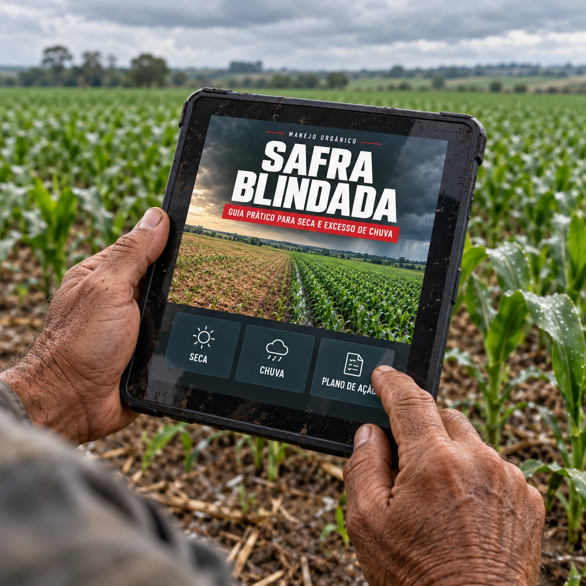
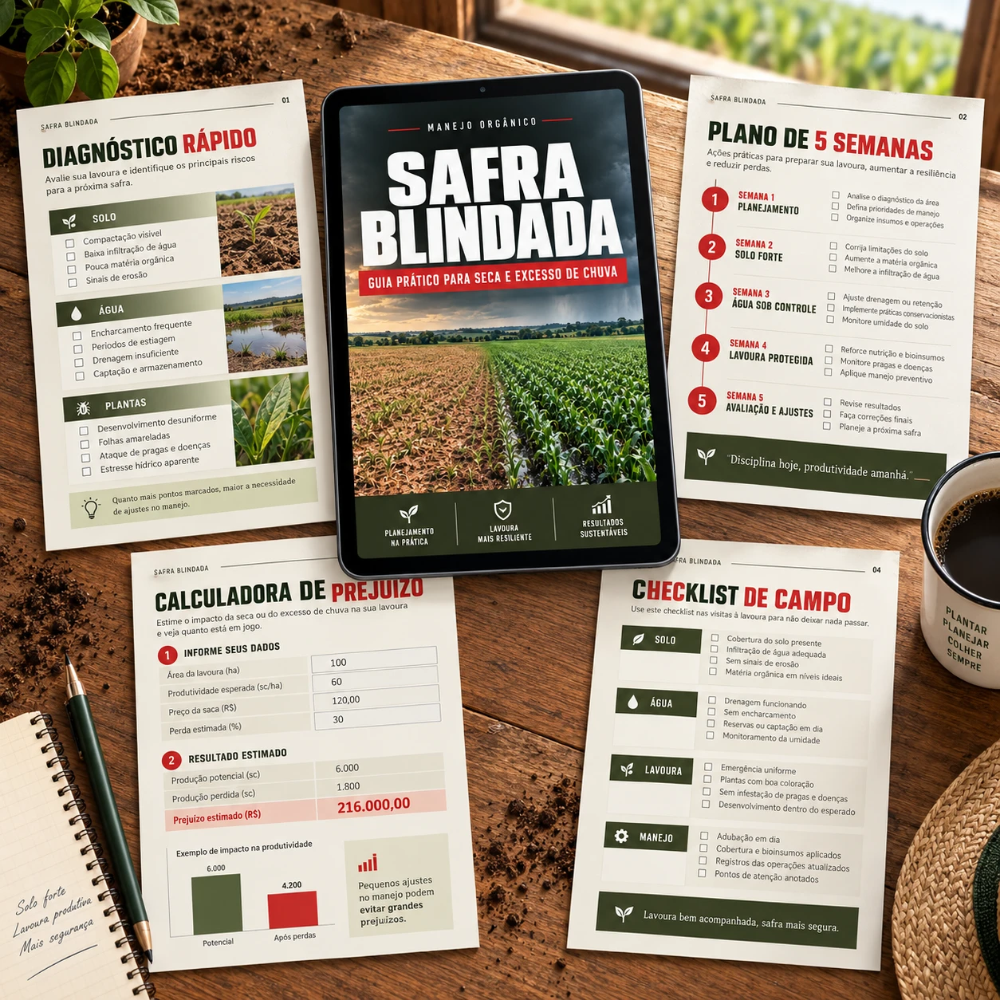

Guia prático de manejo orgânico
Um plano prático para identificar riscos, organizar o manejo do solo e tomar decisões melhores diante de períodos de estiagem, calor intenso ou chuva excessiva.
Acesso digital imediato · Garantia de 7 dias · Pagamento seguro

O El Niño de 2023/2024 foi classificado por institutos meteorológicos internacionais como um dos episódios mais intensos já registrados, e deixou consequências concretas no campo:
Segundo institutos meteorológicos internacionais, desde que o fenômeno passou a ser medido.
O Rio Negro, em Manaus, atingiu em outubro de 2023 o menor nível já registrado, no auge da seca amazônica.
2023 e 2024 registraram as temperaturas médias globais mais altas já medidas, segundo a OMM.
Enquanto o Norte e o Nordeste secavam, o Sul teve volumes de chuva muito acima da média histórica.
Episódios de El Niño se repetem com certa frequência, com intensidade variável a cada ciclo. Estar com o manejo organizado antes do próximo período crítico reduz vulnerabilidades que, na prática, custam caro.
Pequeno e médio produtor orgânico, sem estrutura de irrigação de alto custo ou insumo químico como atalho. Se você já perdeu produtividade por estiagem ou encharcamento em safras anteriores, esse material foi pensado pra sua realidade.
Terra rachando, lavoura murchando semana após semana de estiagem.
Solo encharcado, raiz apodrecendo, chuva que não dá trégua.
Plantas estressadas por seca ou excesso de água tendem a render menos, mesmo com esforço de manejo.
Cada saca perdida representa insumo, tempo e trabalho que já saíram do seu bolso.
Solo degradado por seca ou encharcamento não se recupera sozinho: o efeito pode passar pro ciclo seguinte.
Sem um plano organizado com antecedência, a resposta costuma vir tarde demais pra evitar boa parte do dano.
Apresentando
Um guia prático que te ajuda a identificar riscos, organizar o manejo do solo e da água, e reduzir vulnerabilidades evitáveis — tanto em cenário de seca quanto de excesso de chuva, dentro dos princípios do manejo orgânico.
Veja o que você recebe

O acesso ao Safra Blindada já está liberado, com 28% de desconto.
Quero acessar o Safra BlindadaReter água, reduzir evaporação e organizar o manejo pra estiagem prolongada.
Escoar excesso, proteger a raiz e organizar o manejo pra solo encharcado.
O que vem incluído
Lista de verificação rápida pra manejo em cenário de estiagem.
Lista de verificação rápida pra manejo em solo encharcado.
Planilha simples pra estimar o impacto financeiro de agir ou não agir.
Cronograma prático pra sair do diagnóstico à aplicação no talhão.
"Bom dia, pessoal! Quero agradecer de coração pelo produto de vocês. Na safra de 2024, aqui em Maringá/PR, conseguimos manter a lavoura firme, mesmo com o clima complicado. O produto realmente fez a diferença e ajudou a proteger a nossa safra. Pode ter certeza que já virei cliente e vou continuar usando. Obrigado!"
O conteúdo reúne princípios de manejo orgânico de solo e água amplamente reconhecidos, organizados de forma prática pra aplicação direta na propriedade. As informações climáticas citadas se baseiam em dados públicos de institutos como INMET, Embrapa, CPTEC/INPE e o Zoneamento Agrícola de Risco Climático do Ministério da Agricultura. Este material é educativo e não substitui a orientação de um engenheiro agrônomo pra decisões específicas da sua propriedade.
O preço promocional pode mudar em:
Quanto antes você organizar o manejo, menor a chance de agir tarde demais.
Pagamento seguro · Acesso digital imediato · Garantia de 7 dias
Garantia incondicional de 7 dias
Se não fizer sentido pra você, é só pedir reembolso dentro de 7 dias após a compra. Sem burocracia.
O método é baseado em princípios de manejo orgânico de solo e água aplicáveis à maioria das culturas, com orientações adaptáveis ao que você planta. Resultados variam conforme cultura, solo e condições locais.
O guia foi pensado justamente pra quem não tem estrutura de grande produtor: ações de baixo custo e fáceis de aplicar por conta própria.
Sim. O conteúdo cobre os dois cenários mais comuns em episódios de El Niño no Brasil: seca no Norte/Nordeste e excesso de chuva no Sul, com orientação específica pra cada um.
O material prioriza princípios e práticas compatíveis com o manejo orgânico. Qualquer insumo mencionado deve ter uso permitido conforme a legislação e orientação técnica adequada.
Não. É um guia educativo de organização e boas práticas. Para decisões técnicas específicas da sua propriedade, a orientação de um profissional habilitado é sempre recomendada.
Não. Nenhum manejo elimina totalmente o risco climático. O objetivo é reduzir vulnerabilidades evitáveis e melhorar sua capacidade de resposta diante de seca ou excesso de chuva.
Sim, o PDF pode ser consultado direto no celular ou computador. Os checklists também estão em formato pronto pra imprimir, caso prefira levar a campo em papel.
Acesso digital imediato após a confirmação do pagamento, direto no seu e-mail.
Você tem 7 dias corridos após a compra pra pedir reembolso, sem burocracia, caso o material não faça sentido pra você.